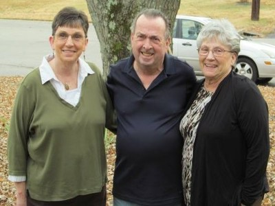
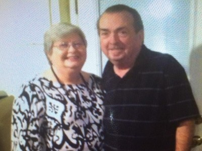
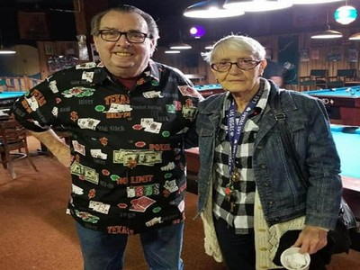
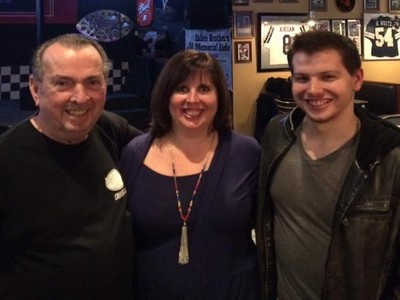

 William Matthew Robertson, my grandfather, was born October 5th, 1942 in the city of Clarksville, TN. He was the middle child of five siblings. I can recall the countless number of stories he has told me about his childhood growing up in Clarksville with his siblings.
William Robertson would enter the Airforce as a medic where he would do four years of service. He would travel to several different locations seeing quite a bit of horrendous things along the way. In all the years spent with my grandfather this is the subject he speaks about the least.
 William Robertson would go on to marry Doe Sykes. The two of them would have two girls, Lisa and Angie. They would get married and William would be blessed with a total of five grandchildren.
 Bill’s true passion was playing Texas Holdem Poker. After playing in games around Tennessee he decided to start his own games once he had retired. He would grow it to host several different free poker games at local venues with over a hundred people attending each night. This is where he would meet so many new people and truly make a difference in a lot of their lives.
My grandfather has taught me a lot over the years. The most important thing he has taught me though is that we are all blessed with the ability to connect. The way in which we connect with people is the way that we are defined. Bill can connect with any person from any walk of life and be a positive presence in their life and that has always been his biggest impact. He has also taught me that we write our own story, in his case literally, and we choose what we make of our life. He has lived such a full life that he decided to write an entire book sharing the stories and experiences from all the people he has met.
 William Robertson is sure to leave a big legacy. He has influenced so many people's lives all in different ways. I have learned from him that it isn’t about what you leave behind but the way you influenced the people that you leave behind. I truly believe that my grandfather is kind, caring and compassionate to all of these people whom he has crossed paths with and them and their stories will be his legacy once he is gone.